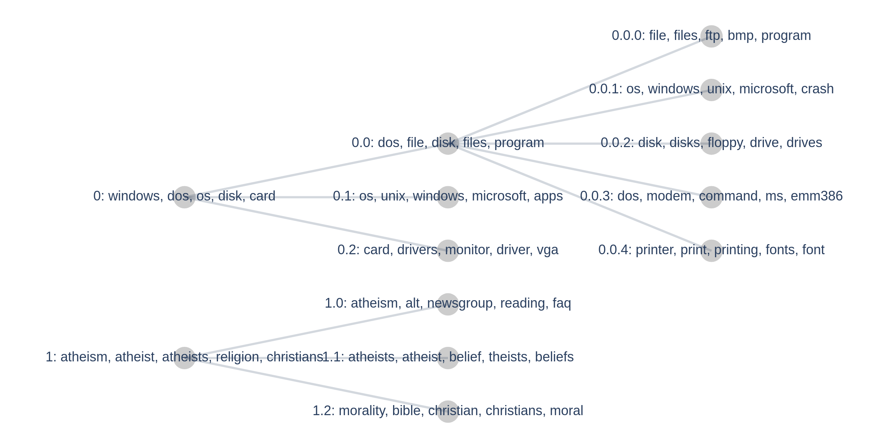

Hierarchical Topic Modeling
Note: Hierarchical topic modeling in Turftopic is still in its early stages, you can expect more visualization utilities, tools and models in the future

You might expect some topics in your corpus to belong to a hierarchy of topics. Some models in Turftopic (currently only KeyNMF) allow you to investigate hierarchical relations and build a taxonomy of topics in a corpus.
Divisive Hierarchical Modeling
Currently Turftopic, in contrast with other topic modeling libraries only allows for hierarchical modeling in a divisive context. This means that topics can be divided into subtopics in a top-down manner. KeyNMF does not discover a topic hierarchy automatically, but you can manually instruct the model to find subtopics in larger topics.
As a demonstration, let's load a corpus, that we know to have hierarchical themes.
from sklearn.datasets import fetch_20newsgroups
corpus = fetch_20newsgroups(
subset="all",
remove=("headers", "footers", "quotes"),
categories=[
"comp.os.ms-windows.misc",
"comp.sys.ibm.pc.hardware",
"talk.religion.misc",
"alt.atheism",
],
).data
In this case, we have two base themes, which are computers, and religion. Let us fit a KeyNMF model with two topics to see if the model finds these.
from turftopic import KeyNMF
model = KeyNMF(2, top_n=15, random_state=42).fit(corpus)
model.print_topics()
| Topic ID | Highest Ranking |
|---|---|
| 0 | windows, dos, os, disk, card, drivers, file, pc, files, microsoft |
| 1 | atheism, atheist, atheists, religion, christians, religious, belief, christian, god, beliefs |
The results conform our intuition. Topic 0 seems to revolve around IT, while Topic 1 around atheism and religion. We can already suspect, however that more granular topics could be discovered in this corpus. For instance Topic 0 contains terms related to operating systems, like windows and dos, but also components, like disk and card.
We can access the hierarchy of topics in the model at the current stage, with the model's hierarchy property.
print(model.hierarchy)
├── 0: windows, dos, os, disk, card, drivers, file, pc, files, microsoft
└── 1: atheism, atheist, atheists, religion, christians, religious, belief, christian, god, beliefs
There isn't much to see yet, the model contains a flat hierarchy of the two topics we discovered and we are at root level. We can dissect these topics, by adding a level to the hierarchy.
Let us add 3 subtopics to each topic on the root level.
model.hierarchy.divide_children(n_subtopics=3)
├── 0: windows, dos, os, disk, card, drivers, file, pc, files, microsoft
│ ├── 0.0: dos, file, disk, files, program, windows, disks, shareware, norton, memory
│ ├── 0.1: os, unix, windows, microsoft, apps, nt, ibm, ms, os2, platform
│ └── 0.2: card, drivers, monitor, driver, vga, ram, motherboard, cards, graphics, ati
└── 1: atheism, atheist, atheists, religion, christians, religious, belief, christian, god, beliefs
. ├── 1.0: atheism, alt, newsgroup, reading, faq, islam, questions, read, newsgroups, readers
. ├── 1.1: atheists, atheist, belief, theists, beliefs, religious, religion, agnostic, gods, religions
. └── 1.2: morality, bible, christian, christians, moral, christianity, biblical, immoral, god, religion
As you can see, the model managed to identify meaningful subtopics of the two larger topics we found earlier. Topic 0 got divided into a topic mostly concerned with dos and windows, a topic on operating systems in general, and one about hardware, while Topic 1 contains a topic about newsgroups, one about atheism, and one about morality and christianity.
You can also easily access nodes of the hierarchy by indexing it:
model.hierarchy[0]
├── 0.0: dos, file, disk, files, program, windows, disks, shareware, norton, memory
├── 0.1: os, unix, windows, microsoft, apps, nt, ibm, ms, os2, platform
└── 0.2: card, drivers, monitor, driver, vga, ram, motherboard, cards, graphics, ati
You can also divide individual topics to a number of subtopics, by using the divide() method.
Let us divide Topic 0.0 to 5 subtopics.
model.hierarchy[0][0].divide(5)
model.hierarchy
├── 0: windows, dos, os, disk, card, drivers, file, pc, files, microsoft
│ ├── 0.0: dos, file, disk, files, program, windows, disks, shareware, norton, memory
│ │ ├── 0.0.1: file, files, ftp, bmp, program, windows, shareware, directory, bitmap, zip
│ │ ├── 0.0.2: os, windows, unix, microsoft, crash, apps, crashes, nt, pc, operating
│ │ ├── 0.0.3: disk, disks, floppy, drive, drives, scsi, boot, hd, norton, ide
│ │ ├── 0.0.4: dos, modem, command, ms, emm386, serial, commands, 386, drivers, batch
│ │ └── 0.0.5: printer, print, printing, fonts, font, postscript, hp, printers, output, driver
│ ├── 0.1: os, unix, windows, microsoft, apps, nt, ibm, ms, os2, platform
│ └── 0.2: card, drivers, monitor, driver, vga, ram, motherboard, cards, graphics, ati
└── 1: atheism, atheist, atheists, religion, christians, religious, belief, christian, god, beliefs
. ├── 1.0: atheism, alt, newsgroup, reading, faq, islam, questions, read, newsgroups, readers
. ├── 1.1: atheists, atheist, belief, theists, beliefs, religious, religion, agnostic, gods, religions
. └── 1.2: morality, bible, christian, christians, moral, christianity, biblical, immoral, god, religion
Visualization
You can visualize hierarchies in Turftopic by using the plot_tree() method of a topic hierarchy.
The plot is interactive and you can zoom in or hover on individual topics to get an overview of the most important words.
model.hierarchy.plot_tree()

API reference
turftopic.hierarchical.TopicNode
dataclass
Node for a topic in a topic hierarchy.
Parameters:
| Name | Type | Description | Default |
|---|---|---|---|
model |
ContextualModel
|
Underlying topic model, which the hierarchy is based on. |
required |
path |
tuple[int]
|
Path that leads to this node from the root of the tree. |
()
|
word_importance |
Optional[ndarray]
|
Importance of each word in the vocabulary for given topic. |
None
|
document_topic_vector |
Optional[ndarray]
|
Importance of the topic in all documents in the corpus. |
None
|
children |
Optional[list[TopicNode]]
|
List of subtopics within this topic. |
None
|
Source code in turftopic/hierarchical.py
95 96 97 98 99 100 101 102 103 104 105 106 107 108 109 110 111 112 113 114 115 116 117 118 119 120 121 122 123 124 125 126 127 128 129 130 131 132 133 134 135 136 137 138 139 140 141 142 143 144 145 146 147 148 149 150 151 152 153 154 155 156 157 158 159 160 161 162 163 164 165 166 167 168 169 170 171 172 173 174 175 176 177 178 179 180 181 182 183 184 185 186 187 188 189 190 191 192 193 194 195 196 197 198 199 200 201 202 203 204 205 206 207 208 209 210 211 212 213 214 215 216 217 218 219 220 221 222 223 224 225 226 227 228 229 230 231 232 233 234 235 236 237 238 239 240 241 242 243 244 245 246 247 248 249 250 251 252 253 254 255 256 257 258 259 260 261 262 263 264 265 266 267 268 269 270 271 272 273 274 275 276 277 | |
description: str
property
Returns a high level description of the topic with its path in the tree and top words.
level: int
property
Indicates how deep down the hierarchy the topic is.
clear()
Deletes children of the given node.
Source code in turftopic/hierarchical.py
229 230 231 232 | |
create_root(model, components, document_topic_matrix)
classmethod
Creates root node from a topic models' components and topic importances in documents.
Source code in turftopic/hierarchical.py
119 120 121 122 123 124 125 126 127 128 129 130 131 132 133 134 135 136 137 138 139 140 141 142 143 144 145 146 147 | |
divide(n_subtopics, **kwargs)
Divides current node into smaller subtopics. Only works when the underlying model is a divisive hierarchical model.
Parameters:
| Name | Type | Description | Default |
|---|---|---|---|
n_subtopics |
int
|
Number of topics to divide the topic into. |
required |
Source code in turftopic/hierarchical.py
239 240 241 242 243 244 245 246 247 248 249 250 251 252 253 254 255 256 | |
divide_children(n_subtopics, **kwargs)
Divides all children of the current node to smaller topics. Only works when the underlying model is a divisive hierarchical model.
Parameters:
| Name | Type | Description | Default |
|---|---|---|---|
n_subtopics |
int
|
Number of topics to divide the topics into. |
required |
Source code in turftopic/hierarchical.py
258 259 260 261 262 263 264 265 266 267 268 269 270 271 272 273 | |
get_words(top_k=10)
Returns top words and words importances for the topic.
Parameters:
| Name | Type | Description | Default |
|---|---|---|---|
top_k |
int
|
Number of top words to return. |
10
|
Returns:
| Type | Description |
|---|---|
list[tuple[str, float]]
|
List of word, importance pairs. |
Source code in turftopic/hierarchical.py
154 155 156 157 158 159 160 161 162 163 164 165 166 167 168 169 170 171 172 173 174 175 176 | |
plot_tree()
Plots hierarchy as an interactive tree in Plotly.
Source code in turftopic/hierarchical.py
275 276 277 | |